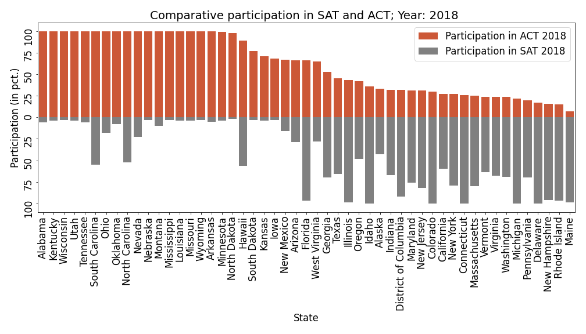

App to predict value of a single transaction in a retail marketing campaign of liquid milk products
Problem Statement
In a marketing campaign that offers discounts, there are several factors other than discount rate that play a role in the final value of revenue per transaction. The factors themselves influence each other, further complicating the revenue dynamics. My goal in this project was to develop and deploy an app that can estimate sales value per transaction for liquid milk products, given a set of paramenters. The deployed model utilizes multiple linear regression to capture the dynamics of sales value per transaction. Some factors I took into account are:
- amount and types of discount
- number of days since start of campaign
- unit volume
- brand
- type of milk
- manufacturer
I used 'The Complete Journey' dataset, which is publicly available from Dunnhumby, to develop this model. Please note that the app was deployed using Heroku's free tier and may take up to a minute to load the first time.
[app link]
[project link]
Information Retrieval From Customer Reviews on Amazon
Problem Statement
Popular businesses, especially ones that offer mutiple products and services, receive large volume of customer feedback in the form of text reviews. Listening to such feedback is essential for a business to succeed. The aim of this project is to use Natural Language Processing (NLP) to extract and aggregate information at the topic level from large volume of customer reviews. Specifically, text reviews from Amazon were used in this project. The model I developed does the following:
- Cluster customer reviews based on their content. This helps us learn about customers.
- Extract high-level information at the topic level for each cluster. Such information can help us improve and/or enhance products/services.
Some techniques and algorithms that went into this work include DistilBERT embeddings, sentence tokenization, HDBSCAN clustering, UMAP, TF-IDF, Latent Dirichlet allocation. As the name suggests, DistilBERT is a distilled version of BERT (Bidirectional Encoder Representations from Transformers). It uses 40% fewer parameters and runs 60% faster than BERT, all the while preserving over 95% of BERT's performance. project link
Classify Reddit Comment to Identify Originating Subreddit
Problem Statement
The problem can be broken down as follows:
- we have a comment;
- we have a selection of two closely relates subreddits;
- need to identify which of the two subreddits the comment belongs to.
The goal of the project is to build a model to automate this classification process. The two subreddits that were selected are /r/buildapc and /r/buildapcforme: both based on advising people who want to build their own PC. E.g. recommending parts that are compatible. project link
Identifying Potential Toronto Neighborhood(s) To Open A Profitable Coffee Shop
Goal
This is a hypothetical case. Our client, who is an entrepreneur, wants to open an independent coffee shop in Toronto. The goal of this project is to use exploratory data analysis and machine learning to recommend a list of neighborhoods best suited for the purpose. Following factors were considered in making the recommendations:
- Geographical Coordinates
- Population
- Average income
- Walkability
- Businesses
- Debt Risk Score
- Venues including Coffee shops, Parks and Playgrounds
project link
Motor Vehicle Collisions in NYC: An analysis of risk factors
Goal
In 2018 alone, there were 228,047 car accidents in New York City. The goal of the project is to identify high risk factors within NYC traffic. The final deliverable is a report that:
- Studies the contributing factors and pre-condition.
- Examines vehicular collisions data as a time series and build a model to predict number of crashes, and
- Create a map of risks, both: spatial and temporal.
The motivating factors for creating such a map are:
- first responders can use it to navigate the city during motor Vehicle crashes, natural disaster, and emergencies; and,
- it be used by city planers to improve traffic performance and make the roads safer.
In our time-series model, we focused on Lincoln tunnel and its surrounding areas. This is because the tunnel serves as one of the major arteries that feeds traffic from New jersey.
project link
State-Level Participation In ACT and SAT: Exploratory Data Analysis

Goal
Perform detailed exploratory analysis of the landscape of college entrance testing in the United States. Use results from the analysis to provide recommendations for what CollegeBoard needs to do to increase participation in SAT. project link
Residential Evictions in New York City: Exploratory Data Analysis
Goal
New York City has one of the most competitive and expensive real estate in the country. As to be expected, a large portion of the businesses and homes are leased properties. High population density, lack of space for horizontal growth and extensive vertical growth make evictions an unfortunate reality for residents of the city. The goal is exploratory analysis of residents' household income, their level of education and prevalence of certain types of crime in various neighborhoods and how distribution of such factors relate to distribution of evictions per capita.
This study focuses solely on residential properties and their renters. project link